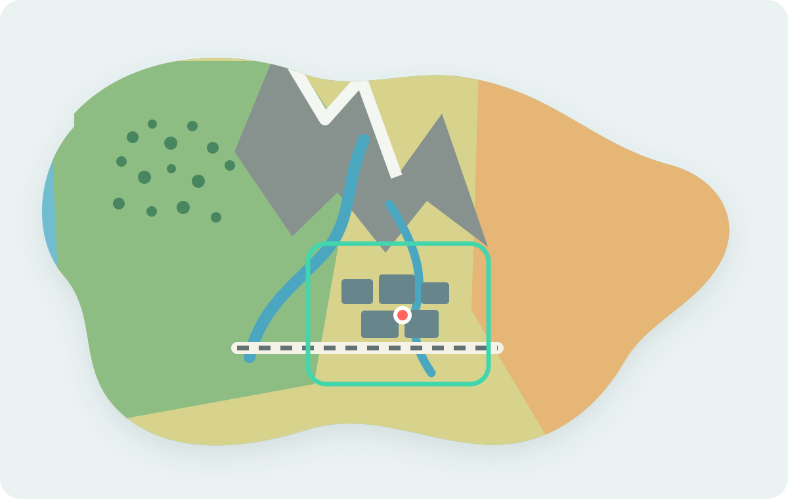
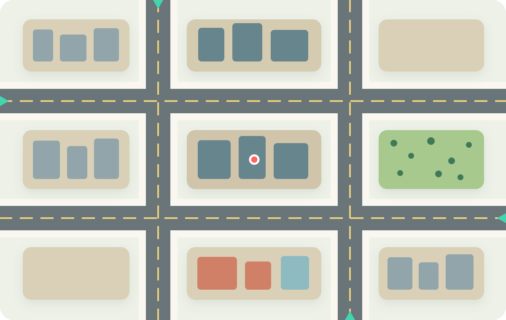
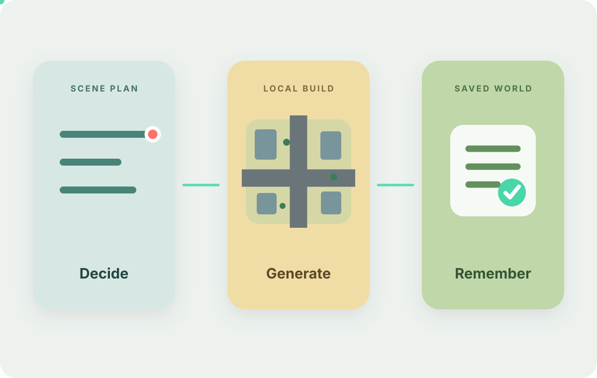
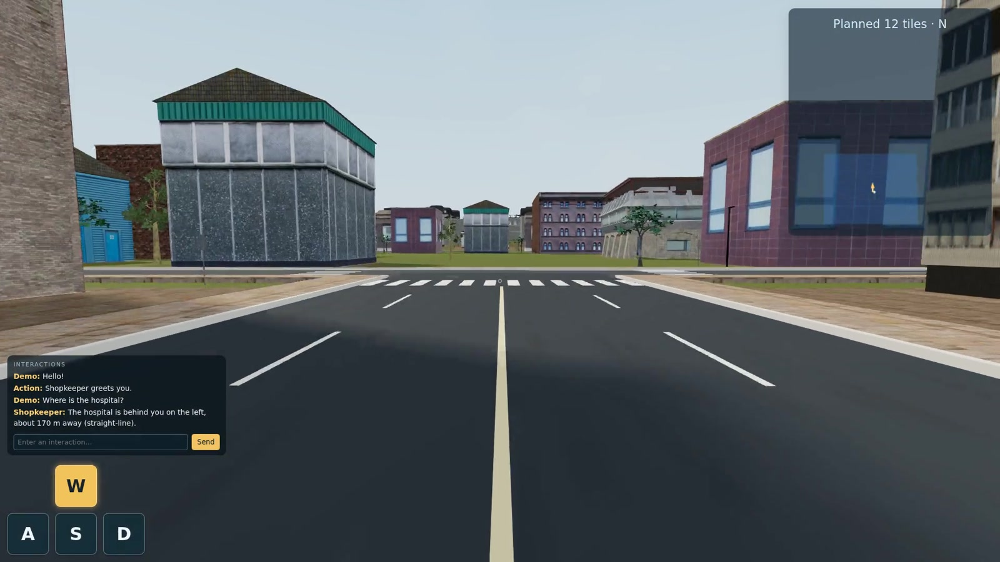

01
MACRO PLANNER · REGION
Shape the world
Connect terrain, settlements, and roads across regions.

BUILT FOR INFINITE EXPLORATION
3D worlds, generated as you explore.
Stream new regions as you explore. Edit the world through language, shape what comes next, and keep your changes.
Silent · Presentation edit, not a real-time benchmark.
Planning and generation run entirely on code and structured state. No visual inputs or intermediates.
HIERARCHICAL PLANNING
Plan regions ahead. Generate detail nearby. Build playable scenes that retain their state.

MACRO PLANNER · REGION
Connect terrain, settlements, and roads across regions.

MICRO PLANNER · TILE
Choose streets, buildings, vegetation, and actors as you approach.

LOCAL CODE
Compile a playable scene. Preserve object identities, layout, and edits.

Explore cities, farmland, forests, deserts, and coasts on one continuously expanding map, planned and generated as you move.



LANGUAGE-GUIDED EDITING
Ask for a forest and water channel in the desert. Watch the landscape update beside the trail.
STATEFUL NPC INTERACTION
NPCs go about their day and respond to you. Ask for directions, call a sheep, or offer it food.
RESPONSE TO VISIBLE CONTENT
With Jev as planner, estimated response time drops to ~0.7 seconds, compared with ~30 seconds for Claude.